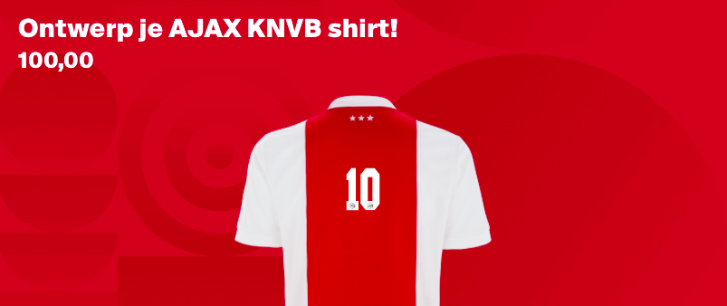

Classic Ajax Amsterdam.
In wat na zo’n onwerkelijk seizoen een passend eerbetoon aan fans is, zal dit historische logo tijdens seizoen 2021/2022 eenmalig op het thuistenue te zien zijn.
Bedrukking KNVB-wedstrijden
Passend bij het klassieke thema zal er tijdens nationale wedstrijden enkel met rugnummer gespeeld worden, niet met spelersnaam.
Bedrukking Europese wedstrijden
In Europese wedstrijden zal er wel met complete rugbedrukking gespeeld worden, conform richtlijnen van UEFA.
